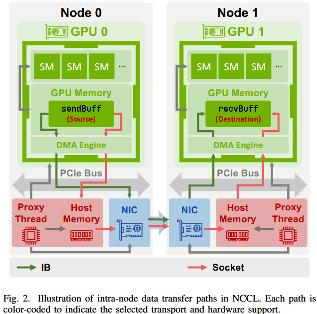

硬件学习：NCCL 学习笔记
参考文章: https://www.cnblogs.com/CQzhangyu/p/19108788
很详细，非常推荐去看原文。
nccl: NVIDIA Collective Communications Library.
顾名思义，是显卡之间通信的一个库，稍微学习一下。主要是经常看到这个词，忍不住想看看了解了解，虽然和工作内容没啥用。主要是回答一个问题：
为什么 NCCL 会这么快，会比平时设备通信要更快？
前提知识
几种通信方式
- BroadCast
- Reduce
- ReduceScatter
- AllGather
- AllReduce
NCCL 通信流程
NCCL 的通信操作发生在多个通信成员（communicator）之间，每个communicator对应一个GPU。所有communicator需要先进行初始化并指定其使用的GPU，才能进行通信。
下文需要知道一个概念：Node，就理解成一台完整的物理服务器整机，多个 CPU、内存、GPU 等设备组成。
节点内通信

以前没有优化的时候，GPU 就当初平常的设备，即要走 PCIe 通道，当 GPU0 给 GPU1 发送数据时，此时需要基于 CPU 做 cudaMemcpy 传输数据。
- GPU0 发起 DMA，把显存数据通过 PCIe 总线，拷贝到 CPU 的系统内存
- 数据在系统内存暂存，CPU 完成地址转换、缓存一致性校验等底层操作
- CPU 再次发起 DMA，把系统内存的数据通过 PCIe 总线，拷贝到 GPU1 的显存
数据传输：2 次 PCIe 总线传输 + 2 次系统内存读写 + 全程 CPU 介入调度
现在，当使用 NCCL 通信时，GPU0 向 GPU1 发送数据，首先：
当 GPU 支持 P2P Transport 时
支持 NVIDIA 的 GPUDirect Peer-to-Peer (P2P) 技术时，允许 GPU 之间直接访问内存。
GPU 之间有 NVLink 时，NCCL 实现基于 NVLink 的 GPUDirect P2P通信，直接两个 GPU 内存之间传输数据。数据传输只有一次 NVLink 传输，无内存读写，无 CPU 介入调度。
GPU 之间没有 NVLink 时，NCCL 实现基于 PCIe 的 GPUDirect P2P 通信，这种方式依然要优于以前，和上面唯一不同的就是走的 PCIE 总线。数据传输也只有一次 PCIe 总线传输，无内存读写，无 CPU 介入调度。
当 GPU 不支持 GPUDirect P2P 时
GPU 不支持 GPUDirect P2P，或者性能不好时。如 GPU 在同一台机器（Node）中的不同 CPU 插槽：
- BIOS 中关闭了禁止跨槽 P2P → 走不通
- 设备在不同 CPU 插槽时，要走 CPU 之间的 QPI/UPI 互联总线 -
此时 NCCL 还支持通过主机共享内存（Shared Memory，SHM）的通信。在 SHM 模式下，一个 GPU 的控制进程（CPU）负责将数据写入到一块共享的内存区域，而另一个 GPU 的控制进程负责从共享区域读入数据。
个人注：感觉和以前的通信没有太大提升。
最后，NCCL还支持使用网卡（NIC）进行节点内GPU之间的数据传输。这种方式可以更充分的利用PCIe带宽，避免CPU成为瓶颈。前提是网卡支持GPUDirect RDMA。
个人注：理解这个需要了解 RDMA，这个就相当于之前是 CPU 参与调度，但容易有瓶颈，因此让更适合搬运数据的 RDMA 来做这种事情。
节点间通信

这个倒是很简单，若网络支持RDMA，NCCL会使用IB进行通信。不支持的话，则使用 TCP socket 通信。
其中还需要看网卡是否支持GPUDirect RDMA，若支持，则intermediate buffer位于GPU内存中。网卡直接从GPU中读写数据，从而避免了对主机内存的访问。
流水线通信
如下图所示，以前的数据传输，时间随着节点数目线性增长，并不高效。

改成切片之后，就可以用流水线的方式来传输数据，从而提高效率。而且节点数目多，那增加切片数量就可以了。这种方式叫 ring-base collectives